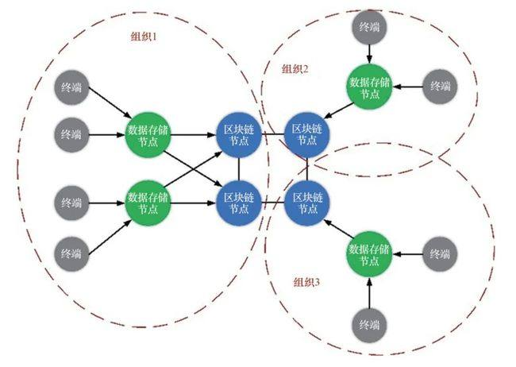

第 1 页 · 数智人才培养

数智人才培养
AI通识精品系列
周苏 教授 QQ：81505050
人工智能通识教程

第 2 页 · 第14章
第14章
周苏 教授 QQ：81505050
人工智能伦理与安全


第 3 页 · 人工智能应用的日益广泛带来了诸多复杂的伦理问题。华裔人工智能科学家李飞飞指出：现在迫切需要让伦理成为人工智能研究与发展的
人工智能应用的日益广泛带来了诸多复杂的伦理问题。华裔人工智能科学家李飞飞指出：现在迫切需要让伦理成为人工智能研究与发展的根本组成部分。显然，人们比历史上任何时候都更加需要注重技术与伦理的平衡。因为，一方面，技术意味着速度和效率，应当发挥好技术的无限潜力，善用技术追求效率，创造社会和经济效益。另一方面，人性意味着深度和价值，要追求人性，维护人类价值和自我实现，避免技术发展和应用突破人类伦理底线。只有保持警醒和敬畏，在以效率为准绳的“技术算法”和以伦理为准绳的“人性算法”之间实现平衡，才能确保“科技向善”。
第14章 人工智能伦理与安全
第 4 页 · 01

01
人工智能面临
的伦理挑战
02
伦理与安全
03
人工智能
伦理原则
04
构建“可信赖”
人工智能系统
目录 / CONTENTS
05
人工智能
伦理的发展
第 5 页 · PART 01
PART 01
人工智能面临的伦理挑战
第 6 页 · 有专家认为，人工智能伦理规则的缺失，会导致人工智能产品竞争力的下降以及人工智能标准话语权的丧失。我国应加快建设基于全球价
有专家认为，人工智能伦理规则的缺失，会导致人工智能产品竞争力的下降以及人工智能标准话语权的丧失。我国应加快建设基于全球价值观、符合中国特色的人工智能伦理规范，加快伦理研究和创新步伐，构筑我国人工智能发展的竞争优势。
14.1 人工智能面临的伦理挑战
第 7 页 · 从语音识别到智能音箱，从无人驾驶到人机对战，经过多年不断地创新发展，人工智能给人类社会带来了一次又一次惊喜。近年来，人工
从语音识别到智能音箱，从无人驾驶到人机对战，经过多年不断地创新发展，人工智能给人类社会带来了一次又一次惊喜。近年来，人工智能的应用如火如荼，人工智能技术与各产业领域的深度融合，形成智能经济新形态，为实体经济的发展插上了腾飞的翅膀。人工智能加速同产业深度融合，推动各产业变革。在医疗、金融、汽车、家居、交通、教育等公共服务行业，人工智能都有了较为成熟的应用。
14.1.1 人工智能与人类的关系
第 8 页 · 同时，个人身份信息和行为数据有可能被整合在一起，这虽能让机器更了解我们，为人们提供更好的服务，但如果使用不当，则可能引发
同时，个人身份信息和行为数据有可能被整合在一起，这虽能让机器更了解我们，为人们提供更好的服务，但如果使用不当，则可能引发隐私和数据泄露问题。例如，据《福布斯》网站报道，一名14岁的少年黑客轻而易举地侵入了汽车的互联网系统，甚至可以远程操控汽车，震惊了整个汽车行业。可见，如何更好地解决社会关注的伦理相关问题，需要我们提早考虑和布局。
对人工智能与人类之间伦理关系的研究，不能脱离对人工智能技术本身的讨论。
14.1.1 人工智能与人类的关系
第 9 页 · （1）首先，是人工智能的发展路径。在1956年达特茅斯学院的研讨会上，人们思考的是如何将人类的各种感觉，包括视觉、听觉、
（1）首先，是人工智能的发展路径。在1956年达特茅斯学院的研讨会上，人们思考的是如何将人类的各种感觉，包括视觉、听觉、触觉，甚至大脑的思考都变成信息，并加以控制和应用。因此，人工智能的发展在很大程度上是对人类行为的模拟，让一种更像人的思维的机器思维能够诞生。著名的图灵测试，其目的也是在检验人工智能是否更像人类。
14.1.1 人工智能与人类的关系
第 10 页 · 但问题在于，机器思维在做出其判断时，是否需要人的思维这个中介？也就是说，机器是否需要先将自己的思维装扮得像一个人类，再去
但问题在于，机器思维在做出其判断时，是否需要人的思维这个中介？也就是说，机器是否需要先将自己的思维装扮得像一个人类，再去做出判断？显然，对于人工智能来说，答案是否定的。人类的思维具有一定的定势和短板，强制性地模拟人类大脑思维的方式，并不是人工智能发展的良好选择。
14.1.1 人工智能与人类的关系
第 11 页 · （2）人工智能发展的另一个方向，即智能增强。如果模拟真实的人的大脑和思维的方向不再重要，那么，人工智能是否能发展出一种纯
（2）人工智能发展的另一个方向，即智能增强。如果模拟真实的人的大脑和思维的方向不再重要，那么，人工智能是否能发展出一种纯粹机器的学习和思维方式？倘若机器能够思维，是否能以机器本身的方式来进行。
14.1.1 人工智能与人类的关系
第 12 页 · 机器学习，即属于机器本身的学习方式，它通过海量的信息和数据收集，让机器从这些信息中提出自己的抽象观念，例如，在给机器浏览
机器学习，即属于机器本身的学习方式，它通过海量的信息和数据收集，让机器从这些信息中提出自己的抽象观念，例如，在给机器浏览了上万张猫的图片之后，让机器从这些图片信息中自己提炼出关于猫的概念。这个时候，很难说机器自己抽象出来的关于猫的概
念与人类自己理解的猫的概念之间是否
存在着差别。
14.1.1 人工智能与人类的关系
第 13 页 · 一个不再像人一样思维的机器，或许会给人类带来更大的恐慌。毕竟，模拟人类大脑和思维的人工智能尚具有一定的可控性，但基于机器
一个不再像人一样思维的机器，或许会给人类带来更大的恐慌。毕竟，模拟人类大脑和思维的人工智能尚具有一定的可控性，但基于机器思维的人工智能，显然不能做出简单结论。
不过，说智能增强技术是对人类的取代似乎也言之尚早，第一个提出“智能增强”的工程师恩格尔巴特认为：智能增强技术更关心的是人与智能机器之间的互补性，如何利用智能机器来弥补人类思维上的不足。
14.1.1 人工智能与人类的关系
第 14 页 · 由于智能增强技术带来了两个平面，
由于智能增强技术带来了两个平面，
一方面是人类思维的平面，
另一方面是机器的平面，
所以，两个平面之间需要一个接口，接口技术让人与智能机器的沟通成为可能。在这种观念的指引下，今天人工智能的发展目标并不是产生一种独立的意识，而是如何形成与人类交流的接口技术。也就是说，人类与智能机器的关系，既不是纯粹的利用关系，因为人工智能已经不再是机器或软件，也不是对人的取代，成为人类的主人，而是一种共生性的伙伴关系。
14.1.2 人与智能机器的沟通
第 15 页 · 由人工智能衍生出的技术还有很多，其中潜在的伦理问题与风险也值得我们去深入探讨。如今关于“人工智能威胁论”的观点有不少支持
由人工智能衍生出的技术还有很多，其中潜在的伦理问题与风险也值得我们去深入探讨。如今关于“人工智能威胁论”的观点有不少支持者，像比尔·盖茨、埃隆·马斯克，还包括斯蒂芬·霍金，都对社会大力发展人工智能技术抱有一种谨慎观望甚至反对的态度，也出现了一些有关人工智能灭世的伦理影视作品。这种对“人工智能引发天启”的悲观态度其实是想传达一个道理：如果人类要想在人工智能这一领域进行深入研究发展，就必须建立起一个稳妥的科技伦理，以此来约束人工智能的研发方向和应用领域。
14.1.2 人与智能机器的沟通
第 16 页 · 网络为信息传输提供了保障，不同部门、不同地区间的信息交流逐步增加。为有效地利用网络数据，需要解决多种数据格式的数据共享与
网络为信息传输提供了保障，不同部门、不同地区间的信息交流逐步增加。为有效地利用网络数据，需要解决多种数据格式的数据共享与数据转换问题。简单地说，数据共享就是让在不同地方
使用不同计算机、不同软件的用户能够
读取他人数据并进行各种运算和分析。
图14-2 数据共享
14.1.3 数据共享问题

第 17 页 · 如今，数据共享存在的问题包括：
如今，数据共享存在的问题包括：
（1）数据共享的观念尚未形成。政府各部门经历了可行性研究、调整概算、招投标、详细设计、等级保护等一系列大费周章的过程，好不容易花费大笔经费建立起相对独立的信息化系统，收集到的数据具有垄断性。如今，大数据的概念已经为社会所广泛接受，人们清楚数据存在价值，产生价值，自然不会轻易将自家的数据轻易对外共享。此外，各单位专注于数据的职能，信息化手段只是日常管理过程中的辅助措施。这样的定位也使数据流动共享的观念不易形成。
14.1.3 数据共享问题
第 18 页 · （2）数据共享的机制尚未建立。信息共享是一种持续性的长效机制，从法律层面上尚未出现数据共享的要求。
（2）数据共享的机制尚未建立。信息共享是一种持续性的长效机制，从法律层面上尚未出现数据共享的要求。
（3）信息化标准不统一。在信息孤岛的现状下，机构间信息化标准不统一，因此，数据共享前的准备工作远不是想象的那么简单。从权利清单、共享目录、数据项标准、交换格式、交换标准等多个方面，数据一旦发生变化，都要对相关的内容进行调整。
（4）基础设施不完善。数据共享离不开信息化建设，需要有统一的数据共享交换平台。
14.1.3 数据共享问题
第 19 页 · 利用算法进行全面分析，大数据可以用来判断未来发展趋势与相互关系，也可能直接影响到个人。所谓“匿名化”是指对个人数据的匿名
利用算法进行全面分析，大数据可以用来判断未来发展趋势与相互关系，也可能直接影响到个人。所谓“匿名化”是指对个人数据的匿名处理方式，在未使用附加信息的情况下不能确定数据的主体，其前提是附加信息被分开存储，并采取了技术和管理措施，以确保个人数据不具有特定自然人或可识别自然人的属性。但存在着可重新识别数据主体的可能性：
第一，应用去匿名化技术追溯原始个人数据；
第二，通过多种或特定数据组识别特定自然人或某个特定群体。
14.1.3 数据共享问题
第 20 页 · PART 02
PART 02
伦理与安全
第 21 页 · 弗朗西斯·培根是一位被誉为创造科学方法的哲学家，他在《论古人的智慧》一书中指出：“机械艺术的用途是模糊的，它既可用于治疗
弗朗西斯·培根是一位被誉为创造科学方法的哲学家，他在《论古人的智慧》一书中指出：“机械艺术的用途是模糊的，它既可用于治疗，也可用于伤害。”随着人工智能在经济、社会、科学、医疗、金融和军事领域发挥越来越重要的作用，我们应该考虑一下它可能带来的伤害和补救措施——用现代的说法，就是风险和收益。
14.2 伦理与安全
第 22 页 · 对创造超级智能机器的想法产生普遍的不安感觉是自然的，称之为大猩猩问题。大约700万年前，一种现已灭绝的灵长类进化了，一个
对创造超级智能机器的想法产生普遍的不安感觉是自然的，称之为大猩猩问题。大约700万年前，一种现已灭绝的灵长类进化了，一个分支进化为大猩猩，另一个分支进化为人类。今天，大猩猩对人类分支不太满意，它根本无法控制自己的未来。试想，如果这是成功创造出超级人工智能的结果（人类放弃对未来的控制），那么我们现在也许应该停止对人工智能的研究，并且也放弃人工智能技术可能带来的好处。这就是图灵警告的本质：我们可能无法控制比我们更聪明的机器。
14.2.1 创造智能机器的大猩猩问题
第 23 页 · 人类设计了人工智能系统，如果它们最终掌控了人类自己，那将是设计失败的结果。为了避免这种结果，需要了解潜在失败的根源。
人类设计了人工智能系统，如果它们最终掌控了人类自己，那将是设计失败的结果。为了避免这种结果，需要了解潜在失败的根源。
许多文化中都有关于人类向神灵、精灵、魔术师或魔鬼索取东西的神话。在这些故事中，他们总会因为得到了他们真正想要的东西而最终后悔。如果还有第三个愿望的话，那就是撤销前两个。我们将其称为米达斯国王问题：米达斯是希腊神话中的传奇国王，他要求他所接触的一切都变成黄金，但他在接触了其食物和家人后，就后悔了。如果米达斯遵循基本的安全原则，并在他的愿望中包括“撤消”按钮和“暂停”按钮，他会过得更好。
14.2.1 创造智能机器的大猩猩问题
第 24 页 · 跟其他高科技一样，人工智能也是一把双刃剑。认识人工智能的社会影响，正在日益得到人们的重视。
跟其他高科技一样，人工智能也是一把双刃剑。认识人工智能的社会影响，正在日益得到人们的重视。
积极的方面有很多，例如，通过改进医学诊断发现新的医学成果、更好地预测极端天气、通过辅助直至最终做到自动来实现更安全的驾驶，人工智能可以拯救生命。改善生活的机会也很多。人工智能在农作物管理和粮食生产等方面的应用有助于养活全世界。用机器学习优化业务流程使企业更具生产力、创造更多财富、提供更多就业机会。
14.2.2 积极与消极的方面
第 25 页 · 自动化能够取代许多工人所面临的乏味而危险的任务，让他们可以专注从事更加有趣的事情。残障人士将从基于人工智能的视觉、听觉和
自动化能够取代许多工人所面临的乏味而危险的任务，让他们可以专注从事更加有趣的事情。残障人士将从基于人工智能的视觉、听觉和移动辅助功能中受益。机器翻译已经让来自不同文化背景的人们可以相互交流。基于软件的人工智能解决方案的边际生产成本几乎为零，因此可能有助于先进技术的大众化（即使软件的其他方面有集权的可能性）。
14.2.2 积极与消极的方面
第 26 页 · 尽管有这么多积极方面，我们也不能忽略人工智能的消极因素。许多新技术都曾产生意想不到的负面影响：核裂变导致切尔诺贝利事故并
尽管有这么多积极方面，我们也不能忽略人工智能的消极因素。许多新技术都曾产生意想不到的负面影响：核裂变导致切尔诺贝利事故并产生毁灭全球的威胁，内燃机带来空气污染、全球变暖的威胁。即使按设计初衷使用，有些技术也会产生负面影响，如沙林毒气和电话推销。
14.2.2 积极与消极的方面
第 27 页 · 科学家和工程师面临着伦理考量，哪些项目应该做，哪些项目不应该进行，以及如何确保项目执行是安全且有益的。2010年，英国工
科学家和工程师面临着伦理考量，哪些项目应该做，哪些项目不应该进行，以及如何确保项目执行是安全且有益的。2010年，英国工程和物理科学研究委员会制定了一系列机器人准则。接下来的数年里，其他政府机构、非盈利组织以及各公司纷纷建立了类似的准则。建立准则的重点是，要让每一个创造人工智能技术的机构，以及这些机构中的每个人都要负责确保技术对社会有益而非有害。
14.2.2 积极与消极的方面
第 28 页 · 最常被提到的准则是：
最常被提到的准则是：
确保安全性 建立问责制
确保公平性 维护人权和价值观
尊重隐私 体现多样性与包容性
促进协作 避免集权
提供透明度 承认法律和政策的影响
限制人工智能的有害用途 考虑对就业的影响
14.2.2 积极与消极的方面
第 29 页 · 这些原则中有许多（如“确保安全”）适用于所有软硬件，而不仅仅是人工智能系统。有一些原则措辞模糊，难以衡量与执行。这在一定
这些原则中有许多（如“确保安全”）适用于所有软硬件，而不仅仅是人工智能系统。有一些原则措辞模糊，难以衡量与执行。这在一定程度上是因为人工智能有着众多子领域，每个子领域有着不同的历史规范，每个子领域中人工智能开发者和利益相关者之间的关系也不同。
14.2.2 积极与消极的方面
第 30 页 · 对于很多潜在的人工智能用户而言，要想实现人工智能的成功应用，必须首先解决两方面突出问题：一是人才短缺问题，即无法吸引和留
对于很多潜在的人工智能用户而言，要想实现人工智能的成功应用，必须首先解决两方面突出问题：一是人才短缺问题，即无法吸引和留住人工智能技术开发方面和相关管理方面的人才；二是技术基础设施短缺问题，即数据能力、运算网络能力等数字能力薄弱。
人工智能仍然仅能解决特定问题并具有严重的背景依赖性，这意味着，人工智能当前执行的是有限的任务，通过嵌入到较大型系统来发挥作用。作为一种尚处于发展早期阶段的技术，人工智能促成的能力提高微不足道，迫切将人工智能投入使用将面临巨大的前期成本。
14.2.3 人才和基础设施短缺
第 31 页 · 在信任方面，人工智能透明度的重要性和必要性因具体的人工智能应用而定；人工智能的算法、数据和结果必须可信；用户必须能理解人
在信任方面，人工智能透明度的重要性和必要性因具体的人工智能应用而定；人工智能的算法、数据和结果必须可信；用户必须能理解人工智能系统可能被愚弄的机制。
在安全性方面，为打造强大且富有弹性的数字化能力，需要在研发、操作和安全之间进行平衡；在各机构中树立网络风险管理文化与网络安全负责制至关重要。
在人员与文化方面，使用人工智能需要具备相关领域专业知识、接受过技术训练且拥有合适工具的工作人员；各机构必须培养数据卓越文化。
14.2.3 人才和基础设施短缺
第 32 页 · 在数字能力方面，为了成功运用人工智能技术，各机构必须打造基本的数字能力；通过信息和分析获得竞争优势，需要包括上至总部下至
在数字能力方面，为了成功运用人工智能技术，各机构必须打造基本的数字能力；通过信息和分析获得竞争优势，需要包括上至总部下至部署人员在内的整个系统的全力投入。
14.2.3 人才和基础设施短缺
第 33 页 · 在政策方面，
在政策方面，
一是必须制定伦理方面的政策和标准，指导人工智能技术的应用。
二是必须通过一系列政策措施来加强人工智能生态系统：改革人员雇用权限和安全许可流程，以更好地招募和利用人才。
三是必须认识到国际社会在人工智能方面的活动，采取措施保护人工智能生态环境，使其免遭攻击，免受有害投资的影响。
在理解人工智能对国家安全的影响方面，我们仍处于早期阶段。
14.2.3 人才和基础设施短缺
第 34 页 · 人工智能是人类智能的延伸，也是人类价值系统的延伸。在其发展过程中，应当包含对人类伦理价值的正确考量。设定人工智能技术的伦
人工智能是人类智能的延伸，也是人类价值系统的延伸。在其发展过程中，应当包含对人类伦理价值的正确考量。设定人工智能技术的伦理要求，要依托于社会和公众对人工智能伦理的深入思考和广泛共识，并遵循一些共识原则。
14.2.4 设定伦理要求
第 35 页 · （1）人类利益原则，即人工智能应以实现人类利益为终极目标。这一原则体现对人权的尊重、对人类和自然环境利益最大化以及降低技
（1）人类利益原则，即人工智能应以实现人类利益为终极目标。这一原则体现对人权的尊重、对人类和自然环境利益最大化以及降低技术风险和对社会的负面影响。在此原则下，政策和法律应致力于人工智能发展的外部社会环境的构建，推动对社会个体的人工智能伦理和安全意识教育，让社会警惕人工智能技术被滥用的风险。此外，还应该警惕人工智能系统作出与伦理道德偏差的决策。
14.2.4 设定伦理要求
第 36 页 · （2）责任原则，即在技术开发和应用两方面都建立明确的责任体系，以便在技术层面可以对人工智能技术开发人员或部门问责，在应用
（2）责任原则，即在技术开发和应用两方面都建立明确的责任体系，以便在技术层面可以对人工智能技术开发人员或部门问责，在应用层面可以建立合理的责任和赔偿体系。在责任原则下，在技术开发方面应遵循透明度原则；在技术应用方面则应当遵循权责一致原则。
14.2.4 设定伦理要求
第 37 页 · 人工智能的发展是建立在大量数据的信息技术应用之上，不可避免地涉及到个人信息的合理使用问题，因此对于隐私应该有明确且可操作
人工智能的发展是建立在大量数据的信息技术应用之上，不可避免地涉及到个人信息的合理使用问题，因此对于隐私应该有明确且可操作的定义。人工智能技术的发展也让侵犯个人隐私的行为更为便利，因此相关法律和标准应该为个人隐私提供更强有力的保护。
14.2.5 强力保护个人隐私
第 38 页 · 此外，人工智能技术的发展使得政府对于公民个人数据信息的收集和使用更加便利。大量个人数据信息能够帮助政府各个部门更好地了解
此外，人工智能技术的发展使得政府对于公民个人数据信息的收集和使用更加便利。大量个人数据信息能够帮助政府各个部门更好地了解所服务的人群状态，确保个性化服务的机会和质量。但随之而来的是，政府部门和政府工作人员个人不恰当使用个人数据信息的风险和潜在的危害应当得到足够的重视。
14.2.5 强力保护个人隐私
第 39 页 · 人工智能语境下的个人数据的获取和知情同意应该重新进行定义。首先，相关政策、法律和标准应直接对数据的收集和使用进行规制，而
人工智能语境下的个人数据的获取和知情同意应该重新进行定义。首先，相关政策、法律和标准应直接对数据的收集和使用进行规制，而不能仅仅征得数据所有者的同意；其次，应当建立实用、可执行的、适应于不同使用场景的标准流程以供设计者和开发者保护数据来源的隐私；再次，对于利用人工智能可能推导出超过公民最初同意披露的信息的行为应该进行规制。最后，政策、法律和标准对于个人数据管理应该采取延伸式保护，鼓励发展相关技术，探索将算法工具作为个体在数字和现实世界中的代理人。
14.2.5 强力保护个人隐私
第 40 页 · 涉及的安全、伦理和隐私问题是人工智能发展面临的挑战。安全问题是让技术能够持续发展的前提。技术的发展给社会信任带来了风险，
涉及的安全、伦理和隐私问题是人工智能发展面临的挑战。安全问题是让技术能够持续发展的前提。技术的发展给社会信任带来了风险，如何增加社会信任，让技术发展遵循伦理要求，特别是保障隐私不会被侵犯是亟需解决的问题。为此，需要制订合理的政策、法律、标准基础，并与国际社会协作。建立一个令人工智能技术造福于社会、保护公众利益的政策、法律和标准化环境，是人工智能技术持续、健康发展的重要前提。
14.2.5 强力保护个人隐私
第 41 页 · 机器人应该享受哪些权利，这一问题十分重要。虚构类文学作品中经常考虑机器人人格的问题：从皮格马利翁到葛佩莉亚，再到匹诺曹，
机器人应该享受哪些权利，这一问题十分重要。虚构类文学作品中经常考虑机器人人格的问题：从皮格马利翁到葛佩莉亚，再到匹诺曹，再到电影《人工智能》和《机器管家》，我们都听过一个娃娃／机器人获得生命，并努力被接受为一个有人权的人的传说。
14.2.6 机器人权利
第 42 页 · 为逃避机器人意识这一困境，厄尼·戴维斯主张永远不要造出可能被认为有意识的机器人。约瑟夫·维森鲍姆在1976年出版的《计算
为逃避机器人意识这一困境，厄尼·戴维斯主张永远不要造出可能被认为有意识的机器人。约瑟夫·维森鲍姆在1976年出版的《计算力量与人类理性：从判断到计算》一书中曾提出过这一论点，而在此之前，朱利安·德·拉梅特丽在《人是机器》一书中也提出过这一论点。机器人是我们创造出来用以完成我们指令的工具，如果我们授予它们人格，我们其实只是拒绝为自己财产的行为负责：“我的自动驾驶汽车的车祸不是我的错，是汽车自己造成的。”
人们已经通过隐形眼镜、起搏器和人工髋关节等技术增强了人类。但计算概念的加入也可能会模糊人和机器之间的界限。
14.2.6 机器人权利
第 43 页 · PART 03
PART 03
人工智能伦理原则
第 44 页 · 控制论之父维纳在他的著作《人有人的用处》中，在谈到自动化技术和智能机器之后，得出了一个危言耸听的结论：“这些机器的趋势是
控制论之父维纳在他的著作《人有人的用处》中，在谈到自动化技术和智能机器之后，得出了一个危言耸听的结论：“这些机器的趋势是要在所有层面上取代人类，而非只是用机器能源和力量取代人类的能源和力量。很显然，这种新的取代将对我们的生活产生深远影响。”维纳的这句谶语在今天未必成为现实，但已经成为诸多文学和影视作品中的题材。
14.3 人工智能伦理原则
第 45 页 · 《银翼杀手》《机械公敌》《西部世界》等电影以人工智能反抗和超越人类作为题材，机器人向乞讨的人类施舍的画作登上了《纽约客》
《银翼杀手》《机械公敌》《西部世界》等电影以人工智能反抗和超越人类作为题材，机器人向乞讨的人类施舍的画作登上了《纽约客》杂志2017年10月23日的封面……人们越来越倾向于讨论人工智能究竟在何时会形成属于自己的意识，并超越人类，让人类沦为
它们的奴仆。
图14-3 人工智能电影《机械公敌》
14.3 人工智能伦理原则
第 46 页 · 人工智能技术的飞速发展的确给未来带来了一系列挑战。其中，人工智能发展最大的问题，不是技术上的瓶颈，而是人工智能与人类的关
人工智能技术的飞速发展的确给未来带来了一系列挑战。其中，人工智能发展最大的问题，不是技术上的瓶颈，而是人工智能与人类的关系问题，这催生了人工智能的伦理学和跨人类主义的伦理学问题。这种伦理学已经与传统的伦理学发生了较大的偏移，其原因在于，人工智能的伦理学讨论的不再是人与人之间的关系，也不是与自然界的既定事实（如动物，生态）之间的关系，而是人类与自己所发明的一种产品构成的关联。
14.3 人工智能伦理原则
第 47 页 · 2018年7月11日，中国人工智能产业创新发展联盟发布了《人工智能创新发展道德伦理宣言》（简称《宣言》）。《宣言》除了序
2018年7月11日，中国人工智能产业创新发展联盟发布了《人工智能创新发展道德伦理宣言》（简称《宣言》）。《宣言》除了序言之外，一共有六个部分，分别是人工智能系统，人工智能与人类的关系，人工智能与具体接触人员的道德伦理要求，以及人工智能的应用和未来发展的方向，最后是附则。
发布“人工智能创新发展道德伦理宣言”，是为了宣扬涉及人工智能创新、应用和发展的基本准则，以期无论何种身份的人都能经常铭记本宣言精神，理解并尊重发展人工智能的初衷，使其传达的价值与理念得到普遍认可与遵行。
14.3.1 创新发展道德伦理宣言
第 48 页 · 《宣言》指出：
《宣言》指出：
（1）鉴于全人类固有道德、伦理、尊严及人格之权利，创新、应用和发展人工智能技术当以此为根本基础；
（2）鉴于人类社会发展的最高阶段为人类解放和人的自由全面发展，人工智能技术研发当以此为最终依归，进而促进全人类福祉；
（3）鉴于人工智能技术对人类社会既有观念、秩序和自由意志挑战巨大，且发展前景充满未知，对人工智能技术的创新应当设置倡导性与禁止性的规则，这些规则本身应当凝聚不同文明背景下人群的基本价值共识；
14.3.1 创新发展道德伦理宣言
第 49 页 · （4）鉴于人工智能技术具有把人类从繁重体力和脑力劳动束缚中解放的潜力，纵然未来的探索道路上出现曲折与反复，也不应停止人工
（4）鉴于人工智能技术具有把人类从繁重体力和脑力劳动束缚中解放的潜力，纵然未来的探索道路上出现曲折与反复，也不应停止人工智能创新发展造福人类的步伐。
14.3.1 创新发展道德伦理宣言
第 50 页 · 建设人工智能系统，要做到：
建设人工智能系统，要做到：
（1）人工智能系统基础数据应当秉持公平性与客观性，摒弃带有偏见的数据和算法，以杜绝可能的歧视性结果。
（2）人工智能系统的数据采集和使用应当尊重隐私权等一系列人格权利，以维护权利所承载的人格利益。
（3）人工智能系统应当具有技术风险评估机制，保持对系统潜在危险的前瞻性控制能力。
（4）人工智能系统所具有的自主意识程度应当受到科学技术水平和道德、伦理、法律等人文价值的共同评价。
14.3.1 创新发展道德伦理宣言
第 51 页 · 为明确人工智能与人类的关系，《宣言》指出：
为明确人工智能与人类的关系，《宣言》指出：
（1）人工智能的发展应当始终以造福人类为宗旨。牢记这一宗旨，是防止人工智能的巨大优势转为人类生存发展巨大威胁的关键所在。
（2）无论人工智能的自主意识能力进化到何种阶段，都不能改变其由人类创造的事实。不能将人工智能的自主意识等同于人类特有的自由意志，模糊这两者之间的差别可能抹杀人类自身特有的人权属性与价值。
（3）当人工智能的设定初衷与人类整体利益或个人合法利益相悖时，人工智能应当无条件停止或暂停工作进程，以保证人类整体利益的优先性。
14.3.1 创新发展道德伦理宣言
第 52 页 · 《宣言》指出，人工智能具体接触人员的道德伦理要求是：
《宣言》指出，人工智能具体接触人员的道德伦理要求是：
（1）人工智能具体接触人员是指居于主导地位、可以直接操纵或影响人工智能系统和技术，使之按照预设产生某种具体功效的人员，包括但不限于人工智能的研发人员和使用者。
（2）人工智能的研发者自身应当具备正确的伦理道德意识，同时将这种意识贯彻于研发全过程，确保其塑造的人工智能自主意识符合人类社会主流道德伦理要求。
14.3.1 创新发展道德伦理宣言
第 53 页 · （3）人工智能产品的使用者应当遵循产品的既有使用准则，除非出于改善产品本身性能的目的，否则不得擅自变动、篡改原有的设置，
（3）人工智能产品的使用者应当遵循产品的既有使用准则，除非出于改善产品本身性能的目的，否则不得擅自变动、篡改原有的设置，使之背离创新、应用和发展初衷，以致破坏人类文明及社会和谐。
（4）人工智能的具体接触人员可以根据自身经验，阐述其对人工智能产品与技术的认识。此种阐述应当本着诚实信用的原则，保持理性与客观，不得诱导公众的盲目热情或故意加剧公众的恐慌情绪。
14.3.1 创新发展道德伦理宣言
第 54 页 · 针对人工智能的应用，《宣言》指出：
针对人工智能的应用，《宣言》指出：
（1）人工智能发展迅速，但也伴随着各种不确定性。在没有确定完善的技术保障之前，在某些失误成本过于沉重的领域，人工智能的应用和推广应当审慎而科学。
（2）人工智能可以为决策提供辅助。但是人工智能本身不能成为决策的主体， 特别是国家公共事务领域，人工智能不能行使国家公权力。
14.3.1 创新发展道德伦理宣言
第 55 页 · （3）人工智能的优势使其在军事领域存在巨大应用潜力。出于对人类整体福祉的考虑，应当本着人道主义精神，克制在进攻端武器运用
（3）人工智能的优势使其在军事领域存在巨大应用潜力。出于对人类整体福祉的考虑，应当本着人道主义精神，克制在进攻端武器运用人工智能的冲动。
（4）人工智能不应成为侵犯合法权益的工具，任何运用人工智能从事犯罪活动的行为，都应当受到法律的制裁和道义的谴责。
（5）人工智能的应用可以解放人类在脑力和体力层面的部分束缚，在条件成熟时，应当鼓励人工智能在相应领域发挥帮助人类自由发展的作用。
14.3.1 创新发展道德伦理宣言
第 56 页 · 《宣言》指出，当前发展人工智能的方向主要是：
《宣言》指出，当前发展人工智能的方向主要是：
（1）探索产、学、研、用、政、金合作机制，推动人工智能核心技术创新与产业发展。特别是推动上述各方资源结合，建立长期和深层次的合作机制，针对人工智能领域的关键核心技术难题开展联合攻关。
（2）制定人工智能产业发展标准，推动人工智能产业协同发展。推动人工智能产业从数据规范、应用接口以及性能检测等方面的标准体系制定，为消费者提供更好的服务与体验。
14.3.1 创新发展道德伦理宣言
第 57 页 · （3）打造共性技术支撑平台，构建人工智能产业生态。推动人工智能领域龙头企业牵头建设平台，为人工智能在社会生活各个领域的创
（3）打造共性技术支撑平台，构建人工智能产业生态。推动人工智能领域龙头企业牵头建设平台，为人工智能在社会生活各个领域的创业创新者提供更好支持。
（4）健全人工智能法律法规体系。通过不断完善人工智能相关法律法规，在拓展人类人工智能应用能力的同时，避免人工智能对社会和谐的冲击，寻求人工智能技术创新、产业发展与道德伦理的平衡点。
14.3.1 创新发展道德伦理宣言
第 58 页 · 人工智能的发展在深度与广度上都是难以预测的。根据新的发展形势，对本宣言的任何修改都不能违反人类的道德伦理法律准则，不得损
人工智能的发展在深度与广度上都是难以预测的。根据新的发展形势，对本宣言的任何修改都不能违反人类的道德伦理法律准则，不得损害人类的尊严和整体福祉。
14.3.1 创新发展道德伦理宣言
第 59 页 · 2019年，欧盟人工智能高级别专家组正式发布了“可信赖的人工智能伦理准则”。
2019年，欧盟人工智能高级别专家组正式发布了“可信赖的人工智能伦理准则”。
根据准则，可信赖的人工智能应该是：
（1）合法——尊重所有适用的法律法规。
（2）合乎伦理——尊重伦理原则和价值观。
（3）稳健——既从技术角度考虑，又考虑到其社会环境。
14.3.2 欧盟可信赖的伦理准则
第 60 页 · 该指南提出了未来人工智能系统应满足的7大原则，以便被认为是可信的。并给出一份具体的评估清单，旨在协助核实每项要求的适用情
该指南提出了未来人工智能系统应满足的7大原则，以便被认为是可信的。并给出一份具体的评估清单，旨在协助核实每项要求的适用情况。
（1）人类代理和监督：人工智能不应该践踏人类的自主性。人们不应该被人工智能系统所操纵或胁迫，应该能够干预或监督软件所做的每一个决定；
（2）技术稳健性和安全性：人工智能应该是安全而准确的，它不应该轻易受到外部攻击（例如对抗性例子）的破坏，并且应该是相当可靠的；
14.3.2 欧盟可信赖的伦理准则
第 61 页 · （3）隐私和数据管理：人工智能系统收集的个人数据应该是安全的，并且能够保护个人隐私。它不应该被任何人访问，也不应该轻易被
（3）隐私和数据管理：人工智能系统收集的个人数据应该是安全的，并且能够保护个人隐私。它不应该被任何人访问，也不应该轻易被盗；
（4）透明度：用于创建人工智能系统的数据和算法应该是可访问的，软件所做的决定应该“为人类所理解和追踪”。换句话说，操作者应该能够解释他们的人工智能系统所做的决定；
（5）多样性、无歧视、公平：人工智能应向所有人提供服务，不分年龄、性别、种族或其他特征。同样，人工智能系统不应在这些方面有偏见；
14.3.2 欧盟可信赖的伦理准则
第 62 页 · （6）环境和社会福祉：人工智能系统应该是可持续的（即它们应该对生态负责），并能“促进积极的社会变革”；
（6）环境和社会福祉：人工智能系统应该是可持续的（即它们应该对生态负责），并能“促进积极的社会变革”；
（7）问责制：人工智能系统应该是可审计的，并由现有的企业告密者保护机制覆盖。系统的负面影响应事先得到承认和报告。
14.3.2 欧盟可信赖的伦理准则
第 63 页 · 这些原则中有些条款的措辞比较抽象，很难从客观意义上进行评估。这些指导方针不具有法律约束力，但可以影响欧盟起草的任何未来立
这些原则中有些条款的措辞比较抽象，很难从客观意义上进行评估。这些指导方针不具有法律约束力，但可以影响欧盟起草的任何未来立法。欧盟发布的报告还包括了一份被称为“可信赖人工智能评估列表”，它可以帮助专家们找出人工智能软件中的任何潜在弱点或危险。此列表包括以下问题：“你是否验证了系统在意外情况和环境中的行为方式？”以及“你评估了数据集中数据的类型和范围了吗？”
IBM欧洲主席页特表示，此次出台的指导方针“为推动人工智能的道德和责任制定了全球标准。”
14.3.2 欧盟可信赖的伦理准则
第 64 页 · 2018年5月26日，百度创始人李彦宏在贵阳大数据博览会上指出，所有的人工智能产品、技术都要有大家共同遵循的理念和规则。
2018年5月26日，百度创始人李彦宏在贵阳大数据博览会上指出，所有的人工智能产品、技术都要有大家共同遵循的理念和规则。他首次提出人工智能伦理四原则。他说，伴随技术的快速进步、产品的不断落地，人们切身感受到人工智能给生活带来的改变，从而也需要有新的规则、新的价值观、新的伦理——至少要在这方面进行讨论。不仅无人车要能够认识红绿灯，所有新的人工智能产品、技术都要有共同遵循的理念和规则。
14.3.3 百度四大伦理原则
第 65 页 · （1）人工智能的最高原则是安全可控。一辆无人车如果被黑客攻击了，它有可能变成一个杀人武器，这是绝对不允许的，我们一定要让
（1）人工智能的最高原则是安全可控。一辆无人车如果被黑客攻击了，它有可能变成一个杀人武器，这是绝对不允许的，我们一定要让它是安全的，可控的。
14.3.3 百度四大伦理原则
第 66 页 · （2）人工智能的创新愿景是促进人类更平等地获取技术和能力。如今，中国的BAT，美国的脸书、谷歌、微软，都拥有很强的人工智
（2）人工智能的创新愿景是促进人类更平等地获取技术和能力。如今，中国的BAT，美国的脸书、谷歌、微软，都拥有很强的人工智能能力，但是世界上不仅仅只有这几个大公司需要人工智能的能力、技术。我们需要认真思考怎么能够在新的时代让所有的企业、所有的人能够平等地获取人工智能的技术和能力，防止在人工智能时代因为技术的不平等导致人们在生活、工作各个方面变得越来越不平等。
14.3.3 百度四大伦理原则
第 67 页 · （3）人工智能存在的价值是教人学习，让人成长，而非超越人、替代人。人工智能做出来的东西不应该仅仅简单地模仿人，也不是根据
（3）人工智能存在的价值是教人学习，让人成长，而非超越人、替代人。人工智能做出来的东西不应该仅仅简单地模仿人，也不是根据人的喜好，你喜欢什么就给你什么。我们希望通过人工智能，通过个性化推荐，教人学习，帮助每个用户变成更好的人。
14.3.3 百度四大伦理原则
第 68 页 · （4）人工智能的终极理想是为人类带来更多的自由与可能。人们现在一周工作五天，休息两天，未来一周也许工作两天，休息五天。但
（4）人工智能的终极理想是为人类带来更多的自由与可能。人们现在一周工作五天，休息两天，未来一周也许工作两天，休息五天。但是更重要的是，很可能因为人工智能，劳动不再成为人们谋生的手段，而是变成个人自由意志下的一种需求。你想去创新，想去创造，所以你才去工作，这是人工智能的终极理想——为人类带来更多自由和可能。
14.3.3 百度四大伦理原则
第 69 页 · 2018年，微软发表《未来计算》一书，其中提出了人工智能开发的六大原则，即公平、可靠和安全、隐私和保障、包容、透明、责任
2018年，微软发表《未来计算》一书，其中提出了人工智能开发的六大原则，即公平、可靠和安全、隐私和保障、包容、透明、责任。
（1）公平性。是指对人而言，不同区域、不同等级的所有人在人工智能面前是平等的，不应该有人被歧视。
人工智能的设计均始于训练数据的选择，这是可能产生不公的第一个环节。训练数据应该足以代表我们生存的多样化的世界，至少是人工智能将运行的那一部分世界。以面部识别、情绪检测的人工智能系统为例，如果只对成年人脸部图像进行训练，这个系统可能就无法准确识别儿童的特征或表情。
14.3.4 微软六大伦理原则
第 70 页 · 确保数据的“代表性”还不够，种族主义和性别歧视也可能悄悄混入社会数据。假设设计一个帮助雇主筛选求职者的人工智能系统，如果
确保数据的“代表性”还不够，种族主义和性别歧视也可能悄悄混入社会数据。假设设计一个帮助雇主筛选求职者的人工智能系统，如果用公共就业数据进行筛选，系统很可能会“学习”到大多数软件开发人员为男性，在选择软件开发人员职位的人选时，该系统就很可能偏向男性，尽管实施该系统的公司想要通过招聘提高员工的多样性。
14.3.4 微软六大伦理原则
第 71 页 · 如果人们假定技术系统比人更少出错、更加精准、更具权威，也可能造成不公。许多情况下，人工智能系统输出的结果是一个概率预测，
如果人们假定技术系统比人更少出错、更加精准、更具权威，也可能造成不公。许多情况下，人工智能系统输出的结果是一个概率预测，比如“申请人贷款违约概率约为70%”，结果可能非常准确，但如果贷款管理人员将“70%的违约风险”简单解释为“不良信用风险”，拒绝向所有人提供贷款，那么就有三成的人虽然信用状况良好，贷款申请也被拒绝，导致不公。因此，我们需要对人进行培训，使其理解人工智能结果的含义和影响，弥补人工智能决策中的不足。
14.3.4 微软六大伦理原则
第 72 页 · （2）可靠性和安全性。它指的是人工智能使用起来是安全的、可靠的，不作恶的。全美曾经热议一个关于自动驾驶车辆的话题。有新闻
（2）可靠性和安全性。它指的是人工智能使用起来是安全的、可靠的，不作恶的。全美曾经热议一个关于自动驾驶车辆的话题。有新闻报道称，一辆行驶中的特斯拉系统出现了问题，车辆以每小时120公里的速度在高速行驶，但此时自动驾驶系统已经死机，
司机无法重启自动该系统。
14.3.4 微软六大伦理原则
第 73 页 · 想象一下，如果你要发布一个新药，它的监管、测试和临床试验会受到非常严格的监管流程。但是，为什么自动驾驶车辆的系统安全性完
想象一下，如果你要发布一个新药，它的监管、测试和临床试验会受到非常严格的监管流程。但是，为什么自动驾驶车辆的系统安全性完全是松监管甚至是无监管的？这就是一种对自动化的偏见，指的是我们过度相信自动化。这是一个很奇怪的矛盾：一方面人类过度地信赖机器，但是另一方面其实这与人类的利益是冲突的。
可靠性、安全性是人工智能非常需要关注的一个领域。自动驾驶车只是其中一个例子，它涉及的领域也绝不仅限于自动驾驶。
14.3.4 微软六大伦理原则
第 74 页 · （3）隐私和保障。人工智能因为涉及数据，所以总是会引起个人隐私和数据安全方面的问题。美国有一个非常流行的Strava健身
（3）隐私和保障。人工智能因为涉及数据，所以总是会引起个人隐私和数据安全方面的问题。美国有一个非常流行的Strava健身App，比如你骑自行车，骑行的数据会上传到平台上，社交媒体平台上很多人就可以看到你的健身数据。问题随之而来，有很多美国军事基地的现役军人也在锻炼时使用这个应用，如果他们锻炼的轨迹数据上传了，那么军事基地的地图数据在平台上就都有了。军事基地的位置是高度保密的信息，但是一款健身App就轻松地把数据泄露出去了。
14.3.4 微软六大伦理原则
第 75 页 · （4）人工智能必须考虑到包容性的道德原则，要考虑到世界上各种功能障碍的人群。
（4）人工智能必须考虑到包容性的道德原则，要考虑到世界上各种功能障碍的人群。
如果你是公司负责招聘的人，登录领英系统时会有一些关键字域要选，其中有一页是自我总结。在这一页上，男性对自己的总结和评估通常都会高过女性，女性在这方面对于自我的评价是偏低的。所以，招聘者在选聘人员时获得了不同的数据信号，要将这种数据信号的权重降下来，才不会干扰对应聘者的正常评估。
14.3.4 微软六大伦理原则
第 76 页 · 但这又涉及一个程度问题。数据能够为人类提供很多的洞察力，但是数据本身也包含一些偏见。如何从人工智能、伦理的角度来更好地把
但这又涉及一个程度问题。数据能够为人类提供很多的洞察力，但是数据本身也包含一些偏见。如何从人工智能、伦理的角度来更好地把握这样一个偏见的程度，来实现这种包容性，这就是我们说的人工智能包容性的内涵。
14.3.4 微软六大伦理原则
第 77 页 · （5）透明度。人工智能领域突飞猛进最重要的一个技术就是深度学习，这是机器学习中的一种模型。人们认为至少在现阶段，深度学习
（5）透明度。人工智能领域突飞猛进最重要的一个技术就是深度学习，这是机器学习中的一种模型。人们认为至少在现阶段，深度学习模型的准确度是所有机器学习模型中最高的，但这里存在一个是否透明的问题。透明度和准确度无法兼得，你只能在二者权衡取舍，如果你要更高的准确度，你就要牺牲一定的透明度。
14.3.4 微软六大伦理原则
第 78 页 · 在李世石和阿尔法狗（AlphaGo）的围棋赛中就有这样的例子，阿尔法狗打出的很多手棋事实上是人工智能专家和围棋职业选手根
在李世石和阿尔法狗（AlphaGo）的围棋赛中就有这样的例子，阿尔法狗打出的很多手棋事实上是人工智能专家和围棋职业选手根本无法理解的。如果你是一个人类棋手，你绝对不会下出这样一手棋。所以到底人工智能的逻辑是什么，它的思维是什么，人类目前并不清楚。
人们现在面临的问题是，深度学习的模型很准确，但是它存在不透明的问题。如果这些模型、人工智能系统不透明，就有潜在的不安全问题。
14.3.4 微软六大伦理原则
第 79 页 · 所以，当人工智能应用于一些关键领域，比如医疗领域、刑事执法领域的时候，一定要非常小心。比如某人向银行申请贷款，银行拒绝批
所以，当人工智能应用于一些关键领域，比如医疗领域、刑事执法领域的时候，一定要非常小心。比如某人向银行申请贷款，银行拒绝批准贷款，这个时候作为客户就要问为什么，银行不能说我是基于人工智能，它必须给出一个理由。
14.3.4 微软六大伦理原则
第 80 页 · （6）问责制。人工智能系统采取了某个行动，做了某个决策，就必须为自己带来的结果负责。人工智能的问责制是一个非常有争议的话
（6）问责制。人工智能系统采取了某个行动，做了某个决策，就必须为自己带来的结果负责。人工智能的问责制是一个非常有争议的话题，它还涉及一个法律或者立法的问题。在美国已经出现多例因为自动驾驶系统导致的车祸。如果是机器代替人来进行决策、采取行动出现了不好的结果，到底由谁来负责？原则是要采取问责制，当出现了不好的结果，不能让机器或者人工智能系统当替罪羊，人必须承担责任。
14.3.4 微软六大伦理原则
第 81 页 · 这就牵涉到法律中的法人主体的问题，人工智能系统或全自动化系统是否能作为法人主体存在？它会带来一系列的法律的问题。首先，人
这就牵涉到法律中的法人主体的问题，人工智能系统或全自动化系统是否能作为法人主体存在？它会带来一系列的法律的问题。首先，人工智能系统是否可以判定为是一个法律的主体？如果你判定它是一个法律主体，那就意味着人工智能系统有自己的权力，也有自己的责任。如果它有权力和责任，就意味着它要对自己的行为负责，但是这个逻辑链是否成立？如果它作为一个法律主体存在，那么它要承担相应的责任，也享有接受法律援助的权利。因此，我们认为法律主体一定要是人类。
14.3.4 微软六大伦理原则
第 82 页 · PART 04
PART 04
构建“可信赖”人工智能系统
第 83 页 · 我们生活在一个与人工智能共存的时代。从推荐算法到自动驾驶，从金融风控到医疗诊断，人工智能正在以前所未有的方式影响人们的决
我们生活在一个与人工智能共存的时代。从推荐算法到自动驾驶，从金融风控到医疗诊断，人工智能正在以前所未有的方式影响人们的决策和生活。然而，如果无法确保系统的行为符合人类的伦理、价值观和实际需求，人工智能带来的不仅有效率的提升，更可能是信任的崩塌。
因此，“人机对齐”成为人工智能研究领域的关键议题。这一技术旨在确保人工智能系统在完成复杂任务时，其行为符合人类的意图和预期。
14.4 构建“可信赖”人工智能系统
第 84 页 · 人机对齐的技术核心在于通过偏好学习和伦理嵌入准确表达人类意图、提升决策过程的透明性和可解释性，以及在自主学习中实施安全机
人机对齐的技术核心在于通过偏好学习和伦理嵌入准确表达人类意图、提升决策过程的透明性和可解释性，以及在自主学习中实施安全机制，确保人工智能行为符合人类价值观和伦理标准。
（1）人类意图的表达与建模。人机对齐的第一步，是准确地将人类意图转化为机器可以理解的指令。这并非易事，因为人类的意图往往复杂且多变。
14.4.1 人机对齐的技术核心
第 85 页 · 现代AI采用的主要方法包括：
现代AI采用的主要方法包括：
· 偏好学习：通过分析用户的行为数据或直接采集偏好反馈，构建人类意图的数学模型。例如，OpenAI在训练强化学习模型时引入了“人类反馈强化学习（RLHF）”，让人工智能系统通过人类评估优化其行为。
· 伦理和价值嵌入： 一些研究试图将人类的伦理规范融入人工智能模型。例如，DeepMind开发了一套伦理评估框架，用于在人工智能训练过程中引导其避免不道德行为。
14.4.1 人机对齐的技术核心
第 86 页 · （2）决策过程的透明性与可解释性。对齐的另一关键在于让人工智能的决策过程透明化。当人工智能能够清晰地解释“为什么这样决策
（2）决策过程的透明性与可解释性。对齐的另一关键在于让人工智能的决策过程透明化。当人工智能能够清晰地解释“为什么这样决策”，人类对其信任度将显著提升。
14.4.1 人机对齐的技术核心
第 87 页 · 当前的主流技术包括：
当前的主流技术包括：
· 可解释人工智能：使用模型可视化或生成自然语言解释来阐明算法行为。例如，医疗诊断系统会解释其病情判断的依据，如特定影像区域的异常表现。
· 因果推断：通过分析因果关系增强AI的决策逻辑，让其能够更接近人类的思维方式。
14.4.1 人机对齐的技术核心
第 88 页 · （3）自主学习中的安全机制。人工智能的自主学习能力是一把双刃剑。在增强其性能的同时，如何避免其偏离人类意图成为重大挑战。
（3）自主学习中的安全机制。人工智能的自主学习能力是一把双刃剑。在增强其性能的同时，如何避免其偏离人类意图成为重大挑战。
解决方案包括：
· 价值对齐强化学习：在人工智能自主决策时，引入动态调整机制，确保其行为在既定的价值框架内运行。
· 约束优化：设置硬性约束条件，让人工智能在探索过程中不会突破伦理或法规界限。
14.4.1 人机对齐的技术核心
第 89 页 · 人机对齐的应用场景涵盖自动驾驶、医疗诊断、内容推荐和公共决策等领域，旨在通过技术与伦理的结合，提升系统的安全性、透明性和
人机对齐的应用场景涵盖自动驾驶、医疗诊断、内容推荐和公共决策等领域，旨在通过技术与伦理的结合，提升系统的安全性、透明性和公平性，确保人工智能的行为符合人类的价值观和社会利益。
（1）自动驾驶：从技术到伦理的全面对齐。自动驾驶技术需要在复杂的交通环境中实时决策，涉及安全、效率和伦理考量。特斯拉等企业正在开发更精准的传感器数据融合和决策模型，同时引入人机对齐框架。例如，Waymo在其算法设计中引入了事故预防优先权，确保在突发情况下车辆优先选择最小化伤害的策略。
14.4.2 人机对齐的应用场景
第 90 页 · （2）医疗诊断：人工智能医生的可信赖伙伴。医疗人工智能的应用必须在诊断精度与人类医生的经验之间找到平衡。例如，“IBM沃
（2）医疗诊断：人工智能医生的可信赖伙伴。医疗人工智能的应用必须在诊断精度与人类医生的经验之间找到平衡。例如，“IBM沃森健康”结合医生的反馈优化癌症治疗方案，为患者提供更可靠的建议。与此同时，医疗人工智能系统必须解释其诊断依据，如基因序列特征或影像模式，以确保医生和患者的信任。
14.4.2 人机对齐的应用场景
第 91 页 · （3）内容推荐：避免“信息茧房”。推荐系统常被批评为加剧了信息茧房。为解决这一问题，字节跳动等企业引入了基于多样性优化的
（3）内容推荐：避免“信息茧房”。推荐系统常被批评为加剧了信息茧房。为解决这一问题，字节跳动等企业引入了基于多样性优化的人机对齐策略，让推荐结果更贴近用户的长远利益，而非短期点击率。例如，奈飞的推荐算法通过引入“多目标优化”，平衡用户即时观看兴趣与潜在喜好探索。
14.4.2 人机对齐的应用场景
第 92 页 · （4）公共决策：公平与透明的算法治理。人工智能正在被用于政策评估和公共资源分配，但如何确保其公平性和透明性是重要议题。例
（4）公共决策：公平与透明的算法治理。人工智能正在被用于政策评估和公共资源分配，但如何确保其公平性和透明性是重要议题。例如，美国司法系统曾因AI风险评估工具的种族偏见问题而引发争议。解决此类问题的关键在于建立多方参与的对齐机制，通过定期审查和公开算法设计流程增强社会信任。
14.4.2 人机对齐的应用场景
第 93 页 · 人机对齐面临的未来挑战主要体现如下。
人机对齐面临的未来挑战主要体现如下。
（1）跨文化与跨群体的价值冲突。人类的价值观因文化、社会背景而异。在设计全球化人工智能系统时，如何兼容不同文化的伦理标准是重大挑战。例如，一个在北欧设计的医疗人工智能系统可能无法直接适用于亚洲国家。
14.4.3 未来挑战与时代使命
第 94 页 · （2）对抗性输入与误导性行为。人工智能面临来自对抗性输入的潜在威胁，这些输入可能引导其偏离正确轨道。例如，自动驾驶汽车的
（2）对抗性输入与误导性行为。人工智能面临来自对抗性输入的潜在威胁，这些输入可能引导其偏离正确轨道。例如，自动驾驶汽车的传感器可能被攻击导致错误决策。为此，需要在对齐过程中引入更强的鲁棒性训练。
（3）技术与伦理的动态演进。人工智能技术的快速发展使得伦理框架难以跟上。例如，生成式人工智能的崛起引发了对版权和虚假信息的广泛担忧。未来的人机对齐研究需不断更新技术与伦理的对话机制。
14.4.3 未来挑战与时代使命
第 95 页 · 在人类社会加速与人工智能融合的今天，人机对齐不仅是一项技术课题，更是一项关乎未来的社会工程。它承载着人与技术如何共生的深
在人类社会加速与人工智能融合的今天，人机对齐不仅是一项技术课题，更是一项关乎未来的社会工程。它承载着人与技术如何共生的深刻命题。从自动驾驶到医疗诊断，从内容推荐到政策治理，人机对齐技术正在为人工智能系统注入信任的基因。未来的人工智能系统若能真正实现对人类意图的深度理解与一致响应，将成为人类文明进步的有力工具。
14.4.3 未来挑战与时代使命
第 96 页 · PART 05
PART 05
人工智能伦理的发展
第 97 页 · 人工智能的创新与社会应用方兴未艾，智能社会已见端倪。人工智能发展不仅仅是一场席卷全球的科技革命，也是一场对人类文明带来前
人工智能的创新与社会应用方兴未艾，智能社会已见端倪。人工智能发展不仅仅是一场席卷全球的科技革命，也是一场对人类文明带来前所未有深远影响的社会伦理实验。
人工智能伦理的发展是一个不断演进的过程，旨在应对技术进步带来的道德、法律和社会问题，确保人工智能技术的健康发展并服务于人类的共同福祉。总之，人工智能伦理的发展是一个涉及技术、法律、社会、哲学等多领域交叉的复杂过程，需要全球各界的共同努力，以促进人工智能技术的良性发展，实现技术进步与人类伦理道德的和谐共生。
14.5 人工智能伦理的发展
第 98 页 · 虽然人工智能在语音和图像识别上得到了广泛应用，但真正意义上的人工智能的发展还有很长的路要走。在应用层面，人工智能已经开始
虽然人工智能在语音和图像识别上得到了广泛应用，但真正意义上的人工智能的发展还有很长的路要走。在应用层面，人工智能已经开始用于解决社会问题，各种服务机器人、辅助机器人、陪伴机器人、教育机器人等社会机器人和智能应用软件应运而生，各种伦理问题随之产生。机器人伦理与人因工程相关，涉及人体工程学、生物学和人机交互，需要以人为中心的机器智能设计。随着推理、社会机器人进入家庭，如何保护隐私、满足个性都要以人为中心而不是以机器为中心设计。
14.5 人工智能伦理的发展
第 99 页 · 过度依赖社会机器人将带来一系列的家庭伦理问题。为了避免人工智能以机器为中心，需要法律和伦理研究参与其中，而相关伦理与哲学
过度依赖社会机器人将带来一系列的家庭伦理问题。为了避免人工智能以机器为中心，需要法律和伦理研究参与其中，而相关伦理与哲学研究也要对技术有必要的了解。
14.5 人工智能伦理的发展
第 100 页 · 需要制定人工智能的职业伦理准则，来达到下列目标：
需要制定人工智能的职业伦理准则，来达到下列目标：
（1）为防止人工智能技术的滥用设立红线；
（2）提高职业人员的责任心和职业道德水准；
（3）确保算法系统的安全可靠；
（4）使算法系统的可解释性成为未来引导设计的一个基本方向；
（5）使伦理准则成为人工智能从业者的工作基础；
（6）提升职业人员的职业抱负和理想。
14.5 人工智能伦理的发展
第 101 页 · 人工智能的职业伦理准则至少应包括下列几个方面：
人工智能的职业伦理准则至少应包括下列几个方面：
（1）确保人工智能更好地造福于社会；
（2）在强化人类中心主义的同时，达到走出人类中心主义的目标，在二者之间形成双向互进关系；
（3）避免人工智能对人类造成任何伤害；
（4）确保人工智能体位于人类可控范围之内；
（5）提升人工智能的可信性；
14.5 人工智能伦理的发展
第 102 页 · （6）确保人工智能的可问责性和透明性；
（6）确保人工智能的可问责性和透明性；
（7）维护公平；
（8）尊重隐私、谨慎应用；
（9）提高职业技能与提升道德修养并行发展。
14.5 人工智能伦理的发展
第 103 页 · 对于人工智能伦理规则的未来发展，有以下几点考虑：
对于人工智能伦理规则的未来发展，有以下几点考虑：
（1）长期影响评估：加强对人工智能长期社会、经济、环境影响的预测和评估，确保技术发展与人类可持续发展目标相协调。
（2）伦理治理机制：构建更加完善的伦理治理机制，包括伦理审查委员会、道德准则的实施与监督，以及对不合规行为的处罚机制。
（3）全球伦理共识：推动形成更加广泛、包容的全球伦理共识，确保人工智能技术的开发和应用符合全人类的共同价值观。
14.5 人工智能伦理的发展
第 104 页 · 01

01
人工智能面临
的伦理挑战
02
伦理与安全
03
人工智能
伦理原则
04
构建“可信赖”
人工智能系统
目录 / CONTENTS
05
人工智能
伦理的发展
第 105 页 · 第14章
第14章
周苏 教授 QQ：81505050
人工智能伦理与安全